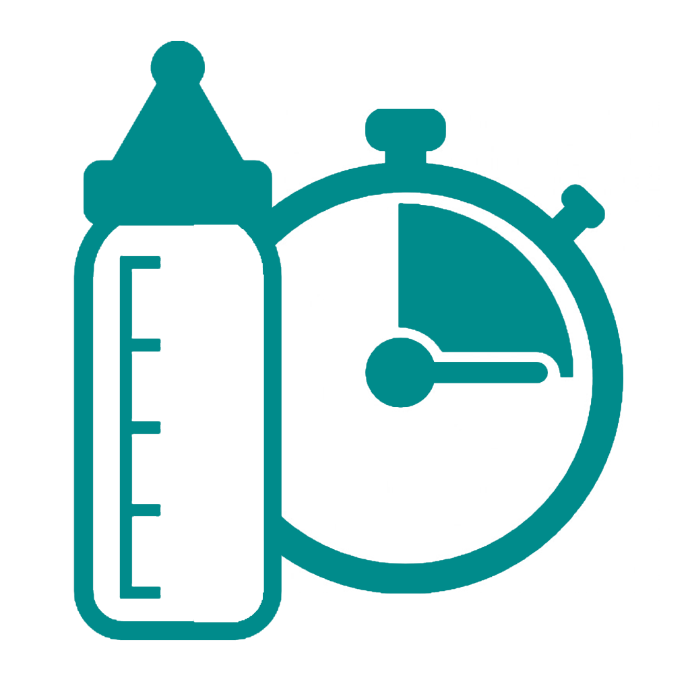

{{'PAGE_TITLE.MENU' | translate}}
{{'MENU.BABY_INFOS' | translate}}
{{'MENU.BABIES_INFOS' | translate}}
{{'MENU.CONFIGURATION' | translate}}
{{'MENU.ACCOUNT' | translate}}
BABY TIMER

version : {{menVM.version}}
Copyright (c) BabyTimer